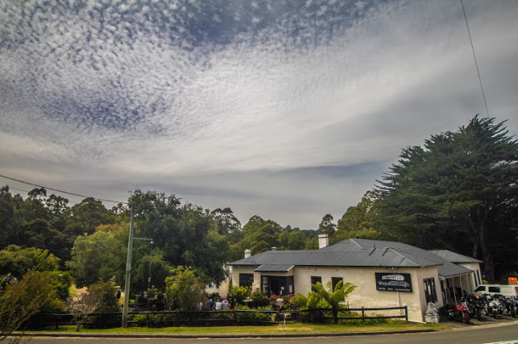

AI invents a hot spring that doesn’t exist.

Earlier this year, Tasmania Tours published a blog highlighting a serene destination called the Weldborough Hot Springs. According to the post, the springs offered a peaceful forest escape, mineral-rich pools, and a favorite stop for hikers exploring northern Tasmania. It looked like exactly the kind of hidden gem travelers hope to stumble across — remote, tranquil, and just obscure enough to feel special.
Then tourists started showing up. Visitors arrived in the small town of Weldborough asking locals for directions to the springs. They called the local hotel. They stopped at the pub. And each time, they were met with the same response: no one had ever heard of them. The confusion grew as more people arrived, convinced they were simply missing a turnoff or a trailhead.
As it turns out, the explanation was far less exotic than the destination itself. The blog post had been produced as part of outsourced marketing work and generated with the help of AI. The person responsible likely wasn’t local and didn’t verify the details before publishing it. A place that sounded right, read well, and looked convincing ended up on a real travel website without anyone stopping to check whether it existed beyond the page.
It’s funny until you zoom out. The internet is now full of AI-generated articles, guides, and recommendations written confidently and at speed. Some are accurate. Some are close enough. And some quietly invent things that no one notices until a human tries to follow the advice. In this case, tourists drove across Tasmania looking for a hot spring that lived entirely in text and images. Somewhere else, there’s probably another destination waiting to be discovered the same way — by someone standing there, confused, asking a local where it went.